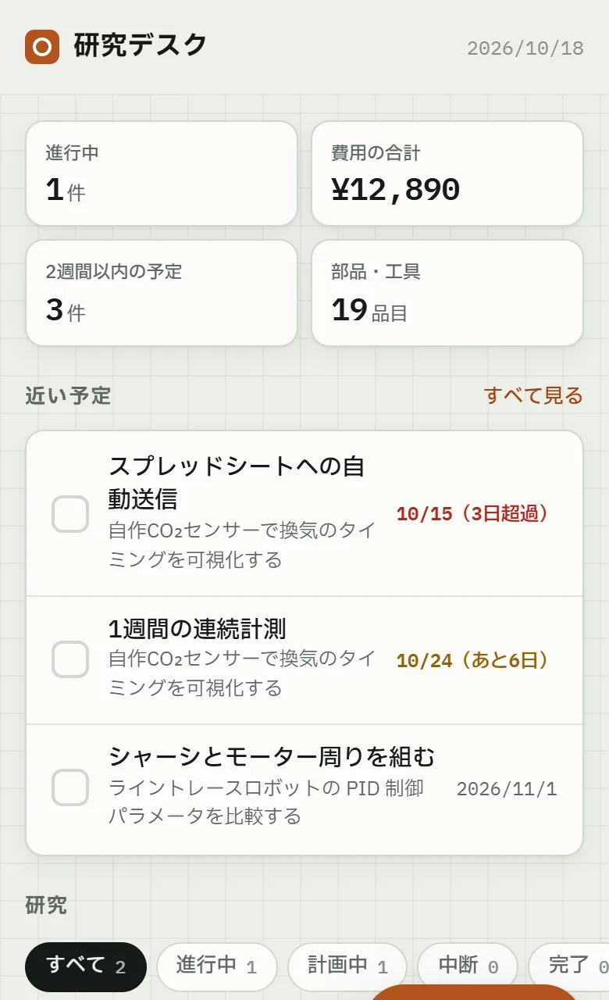

研究デスク
研究ごとに、先行研究・費用・進捗・予定と、電子部品・工具の台帳をまとめて管理するアプリ
- 作った理由
- 研究の動機・目標・予定を忘れないよう書き留めておくとともに、実験のために作るデバイスの設計や進捗、部品の残り数まで、一か所で管理したかったため。
- 主な機能
- 研究ごとに概要・先行研究とデータセット・費用・進捗・予定を管理。DOI・arXiv のURL・BibTeX を貼ると書誌を自動入力
- 電子部品・工具・計測器の台帳。研究で記録した費用から台帳へ自動で追加し、未使用／使用中／使用済みの数を管理
- 自作実験装置の仕様書・手順書。Word・PDF・LaTeX などの資料を読み取って項目に振り分ける
- 技術
- 工夫した点
- Word（.docx）を外部ライブラリなしで読むため、ブラウザ標準の展開機能（DecompressionStream）で中身を取り出して解析
- 資料中の LaTeX 記法（例：
\SI{120}{\milli\ampere}→ 120 mA）をふつうの文字に変換して取り込む - 端末間の同期を項目1件ずつマージし、オフライン中に別の端末で編集しても両方の変更が残るようにした